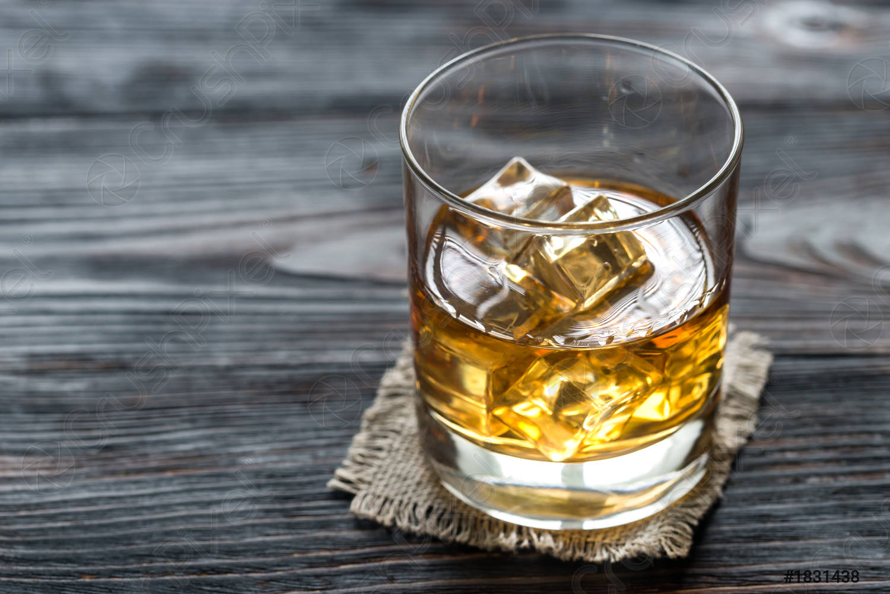

Rum and Coke sans Coke

My go to recipe for when you need a cocktail
but didn't have the energy to run to Walgreens.
The recipe for this couldn't be easier. Just
follow the steps below!
Ingredients
Your favorite rum, preferably spiced.
A glass (optional)
Ice (optional)
Instructions
- Add ice to your glass of choice.
If you don't have ice, skip to step 2.
- Pour you rum into the glass. No glass?
Skip straight to skip 3.
- Enjoy your rum, sans coke
- Get ready for the longest night of your life,
and the worst day ahead.